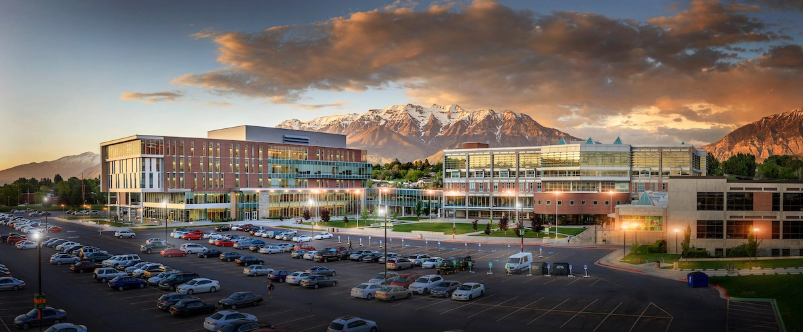
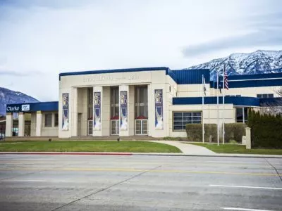
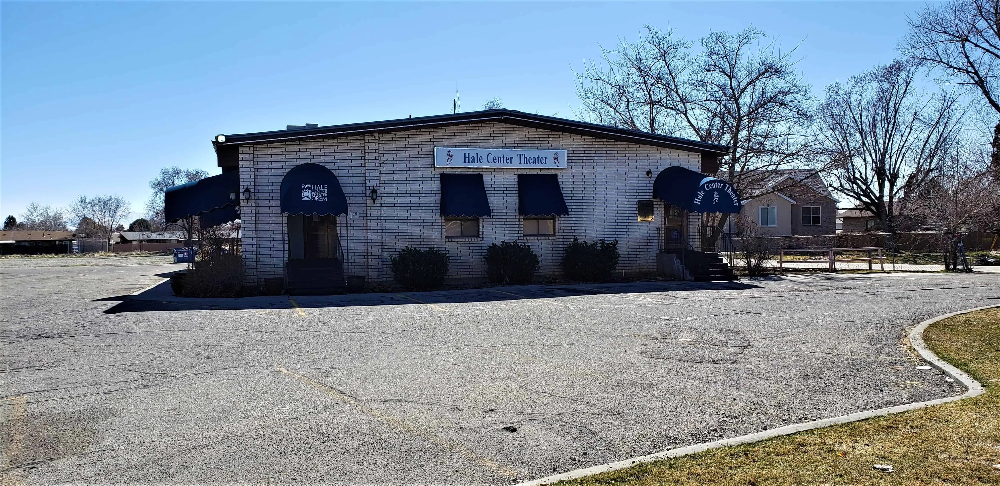
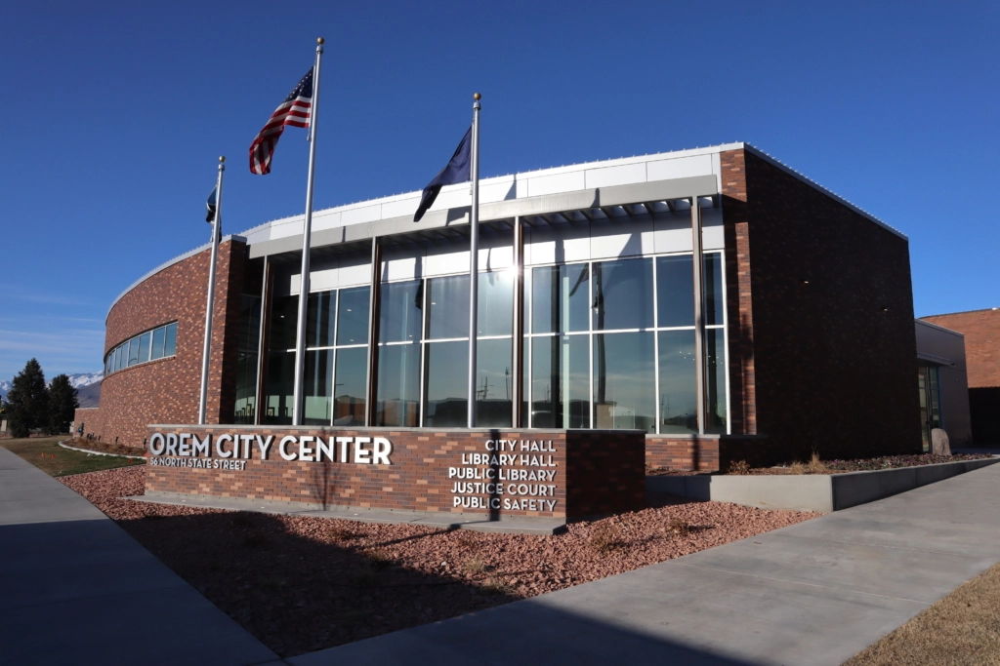
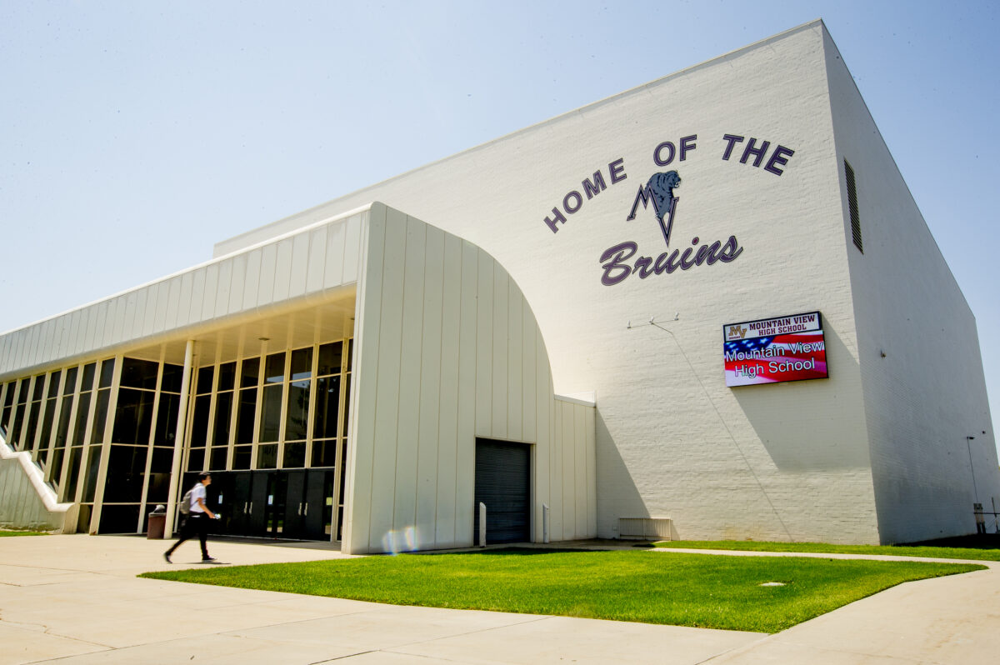
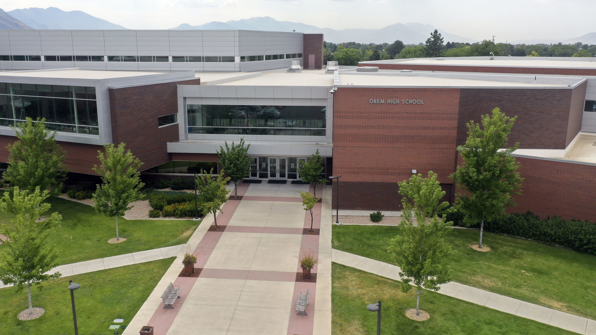
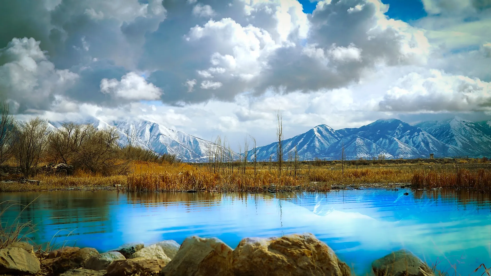

Number of Visits:
Orem gallery

The Orem Temple was just dedicated this year on January 21 2024.
In the temple members are able to do work for them self as well as for the dead.
I am so excited to have a temple close to me in my city.

Utah Valley University -
UVU is the largest University in Utah. They have lots of great programs. students can earn Associates degrees all the way up to Masters degrees. You can even earn certificates
UVU is the largest University in Utah. They have lots of great programs. students can earn Associates degrees all the way up to Masters degrees. You can even earn certificates

SCERA Center for the Arts -
Is one of Orems oldest and best attractions.
Is one of Orems oldest and best attractions.

Hale Center theater -
One of Orems
One of Orems

Orem City Center -
This is where they have the City library, city offices, police station and court.
This is where they have the City library, city offices, police station and court.

Mountain View is the best High school in orem -
Mountain view is the second of three high schools in Orem.
The school opened in 1980 and hasn't been updated, so it looks and feels like a prison.
Mountain view is the second of three high schools in Orem.
The school opened in 1980 and hasn't been updated, so it looks and feels like a prison.

Orem High school -
Orem High school is the first high school in Orem.
The original school was built in 1956 but torn down and rebuilt in 2010.
Orem High school is the first high school in Orem.
The original school was built in 1956 but torn down and rebuilt in 2010.

Orem has a dock to Utah lake -
Utah lake has catfish and white bass in the lake.
Many types of birds like ducks, swans and geese can be found at utah lake.
You get realy beautiful views of the mountains.
Utah lake has catfish and white bass in the lake.
Many types of birds like ducks, swans and geese can be found at utah lake.
You get realy beautiful views of the mountains.